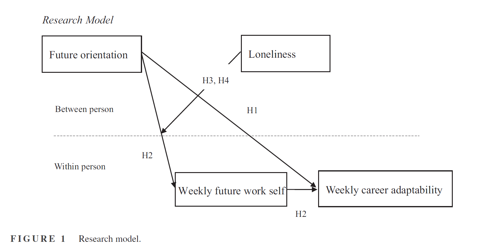
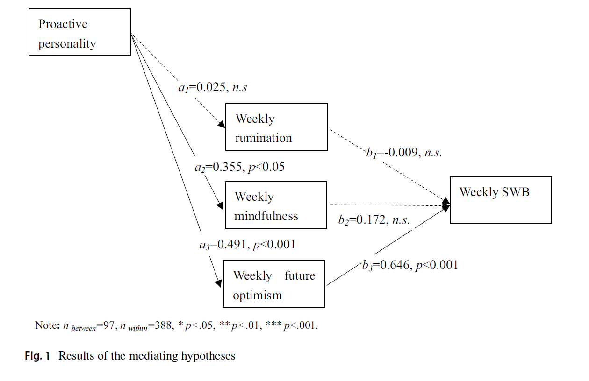
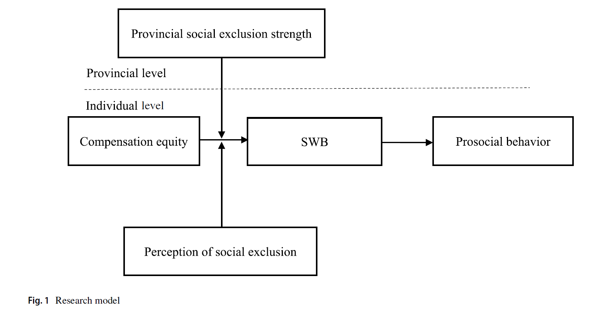
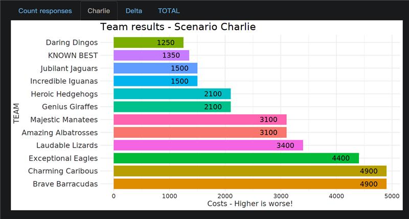
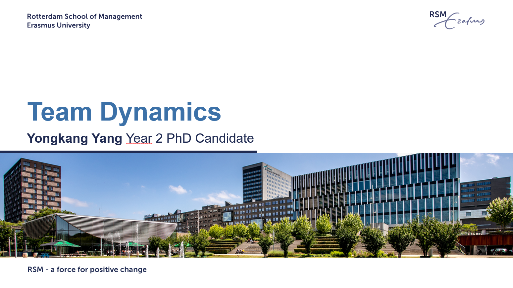
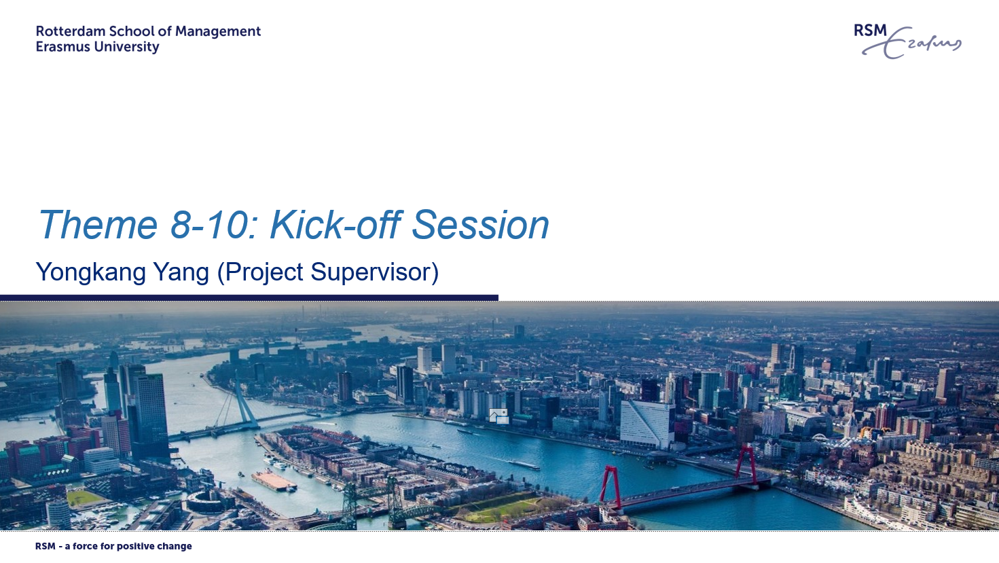

News
-
2024.09 Finished 2024 Berlin Marathon, Germany (42.195km)
-
2024.09 "Differentiated information elaboration" at OB/HRM PhD Seminar, Wuhan University, China
-
2024.06 Paper presentation at AOM in Chicago
-
2024.06 Personal webiste online
-
2024.04 2.5 year assessment [PASS]
-
2024.04 Paper accepted by Career Development Quarterly
-
2023.08 Symposium presentation at AOM in Boston
-
2023.06 IACMR conference visit in HK
-
2022.10 First-year assessment [PASS]
-
2022.04 FInished 2022 Rotterdam Marathon, Netherlands (42.195km)
-
2021.09 Started my PhD at RSM, Erasmus University
-
2021.09 Paper accepted by Journal of Happiness Studies
-
2020.09 First paper accepted by Journal of Business Ethics
-
2018.04 Finished 2018 Wuhan Marathon, China (42.195km)
|
Publication

|
How and when future orientation shapes weekly career adaptability
Yongkang Yang,
Yidong Tu,
Shuoli Wang*,
Yajun Fan,
The Career Development Quarterly, 2024
[Project page]
[PDF]
|
|

|
Focusing on the past, present, or future? Why proactive personality increases weekly subjective well-being
Shuoli Wang,
Yidong Tu*,
Tongtong Zhao,
Yongkang Yang
Journal of Happiness Studies, 2022
[Project page]
[PDF]
|
|

|
Treat floating people fairly: How compensation equity and multilevel social exclusion influence prosocial behavior among china’s floating population.
Yidong Tu,
Ying Zhang*,
Yongkang Yang,
Shuoli Wang,
Journal of Business Ethics, 2022
[Project page]
[PDF]
|
Paper Under Review
1. Yang, Y., van Knippenberg. D. Nederveen Pieterse, A., Li, J. Title hidden for peer-review. Journal of Applied Psychology (1st Round R&R).
2. Yang, Y., Duan, M. Yuan, S., Xing, L. Title hidden for peer-review. Journal of Managerial Psychology (under review).
|
Conference Presentation
1. Lyubykh, Z., Bajet Mestre, E., Gloor, J., Mercer, D., Scheuer, C.-L., Walsh, M., McNally, C., Arnold, K., Loughlin, C., Chalise, S., Agnihotri, N., Khattab, J., Hentschel, T., Yang, Y., Li, J., Pieterse, A., Alonso, N., Turner, N., & Hideg, I. (2023). Gender equity and diversity in the workplace: The role of allyship and leadership. Academy of Management Proceedings. Symposium presented at 83rd Academy of Management Annual Meeting, Boston, MA.
2. Y. Yang., van Knippenberg. D., Pieterse, A., Li, J. (2024) Cross-Culture and Within-Culture Information Elaboration: The Role of Learning Orientation. Academy of Management Proceedings. Paper presented at 84th Academy of Management Annual Meeting, Chicago, IL.
3. Y. Yang., Li, J, van Knippenberg. D., Pieterse, A. (July 2022). How changes in functional background diversity affect transactive memory and team performance. Extended abstract submitted to Development Workshop for Academy of Management Journal, Amsterdam, Netherlands.
|
Working In Progress
PhD Dissertation (Click to expand)
My PhD explores how teams evolve and interact in dynamic context. This includes dynamic team composition, dynamic team diversity, and dynamic within team differentiation
1. Yang, Y., van Knippenberg, D., Li, J., Nederveen Pieterse, A. Dynamic team functional diversity/Team membership change and team processes: A field study. Stage: Data Analyzing.
2. Yang, Y., van Knippenberg, D., Nederveen Pieterse, A., Li, J. Differentiated information elaboration over time. Stage: Data Analyzing.
3. Yang, Y., van Knippenberg, D., Nederveen Pieterse, A., Li, J. Membership change in role differentiated teams. Stage: Data collection.
Continuation of the PhD projects
1. Yang, Y. AI-human teaming and the future directions of team diversity research. Stage: Conceptualization.
2. Fu, L., Yang, Y. Deep level diversity/cross-culture conflict: A longitudinal study. Stage: Conceptualization/Data Analyzing.
Leadership Research (Click to expand)
Leadership is always a fanscinating topic, under which I'm most interested in leader-follower interactions in a dynamic context.
1. Zhang, Y., Yang, Y., Johnson, J., Tu, Y. Temporal focus and ethical leadership. Stage: Conceputalization & Data Collection.
2. Li, D., Yang, Y., Tu, Y., Bai, Y. Awe and leadership in the workplace. Stage: Conceptualization.
Interdisciplinarity Research (Click to expand)
Research calls for interdisciplinarity. The development in AI, neural science, robots, new forms of teaming, etc. begs for more insights from us.
1. Yuan, S., Shao, Y., Xing, L., Yang, Y. Interdisciplinarity in Management Research. Stage: Conceptualization.
Other Research (Click to expand)
Research Incubator.
1. Zhang, J., Kang, Y., Yang, Y. Research Projects.
|  |
2024 Fall, Organizational Behavior Workshop
I organized 30 workshops for over 1500 students.
|
|

|
2023 Spring, Master Thesis Supervision
I supervised three students with their master thesis.
|
|

|
2023 Spring, Bachelor Thesis Supervision
I supervised 7 bachelor thesis teams with 28 bachelor students.
|
|
|
2022 Fall, Professional Development and Consulting
As an academic coach, I supervised 4 master student teams who worked as consultants to solve real-world Human Resource Challenges for major companies.
Check this out: A Linkedin post from RSM.
|
Service
Member of International Association for Chinese Management Research (2018-Present)
Member of Academy of Management (2023-Present)
Reviewer for Academy of Management Annual Meeting 2023, 2024
Reviewer for Journal of Business Ethics 2023, 2024
Reviewer for Journal of Business Research 2023
Reviewer for Frontiers in Psychology 2022
|
|
{kind=link}